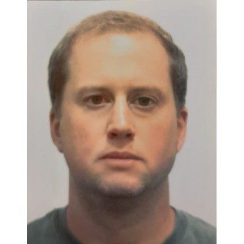

Curriculum vitae
Gerardo Romeny
Karsau, Baden-Württemberg, Germany
+49 01523 1400740
gromenyk@gmail.com

SUMMARY
Currently completing a Master’s in Medical Informatics at the University of Applied Sciences and Arts Northwestern
Switzerland, with a strong focus on data science, machine learning, digital biomarkers and healthcare technology . My
background includes a Bachelor's Degree in Business Administration from Universidad Adolfo Ibáñez, Chile, and
professional experience in finance and entrepreneurship. I am particularly interested in applying my passion for
programming and data to contribute to research and development at the intersection of IT and healthcare, and to keep
learning about everything I can.
EDUCATION
- 2023 to date: University of Applied Sciences and Arts Northwestern Switzerland | Master in Medical Informatics
- 2007: Universidad Adolfo Ibañez, Chile | Master in Finance
- 2003-2006: Universidad Adolfo Ibañez, Chile | Business Administration
- 2001-2003: Chilean Naval Academy
- 1990-2000: Deutsche Schule Karl Anwandter
ADDITIONAL EDUCATION (Diplomas, Courses, Workshops)
- 2022: Universidad Católica de Valparaíso, Chile | Management control Diploma
- 2012: Universidad San Sebastián, Chile | Project preparation and evaluation Diploma
WORK EXPERIENCE
- 2013-2022: Comercial e Importadora Romeny Ltda., Chile. | Founder and Manager
- Management of the company`s operation and administration, including importation processes, financial management, marketing, and website building and maintenance.
- Accomplished to grow the company from scratch to having a branch in Santiago de Chile with a
customer service team and a management software environment for managing the company
remotely, which led to USD$300.000.- in sales in 2021.
- 2010-2013: Clínica Alemana de Valdivia, Chile | Chief Financial Officer
- In charge of the Finance and Administration departments, which included, the acquisition, accounting, billing, collections, and treasury departments.
- Participated successfully in the extension of the medical clinic regarding the financial and administration area, which led to having new medical services such as pediatric and adult ICU, and MRI, among others.
ADDITIONAL SKILLS
LANGUAGES
- Spanish (Native)
- English (CEFR C1)
- German (Intermediate)
SOFTWARE
- Microsoft Office (Intermediate)
- Wordpress (Divi, Woocommerce) (Intermediate)
- Visual Studio Code (Intermediate)
OTHERS
- HTML5 (Advanced)
- CSS (Beginner)
- Python (Intermediate)
- R (Intermediate)
ADDITIONAL INTERESTS
- Expedition Racing - Currently racing two or three races from the Adventure Racing World Series per year and other smaller races.
- Orienteering – Main discipline in Expedition Racing. Usually have been the main navigator for the expedition racing teams I have joined.
- Endurance Sports in general